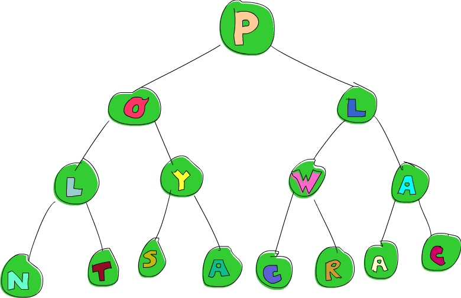

Zippers資料結構

儘管Haskell的純粹性質帶來很多好處，但他讓一些在非純粹語言很容易處理的一些事情變得要用另一種方法解決。由於referential transparency，同樣一件事在Haskell中是沒有分別的。
所以如果我們有一個裝滿5的樹，而我們希望把其中一個換成6，那我們必須要知道我們究竟是想改變哪個5。我們也必須知道我們身處在這棵樹的哪裡。但在Haskell中，每個5都長得一樣，我們並不能因為他們在記憶體中的位址不同就把他們區分開來。我們也不能改變任何狀態，當我們想要改變一棵樹的時候，我們實際上是說我們要一棵新的樹，只是他長得很像舊的。
一種解決方式是記住一條從根節點到現在這個節點的路徑。我們可以這樣表達：給定一棵樹，先往左走，再往右走，再往左走，然後改變你走到的元素。雖然這是可行的，但這非常沒有效率。如果我們想接連改變一個在附近的節點，我們必須再從根節點走一次。
在這個章節中，我們會看到我們可以集中注意在某個資料結構上，這樣讓改變資料結構跟遍歷的動作非常有效率。
來走二元樹吧!
我們在生物課中學過，樹有非常多種。所以我們來自己發明棵樹吧！
data Tree a = Empty | Node a (Tree a) (Tree a) deriving (Show)
這邊我們的樹不是空的就是有兩棵子樹。來看看一個範例：
freeTree :: Tree Char
freeTree =
Node 'P'
(Node 'O'
(Node 'L'
(Node 'N' Empty Empty)
(Node 'T' Empty Empty)
)
(Node 'Y'
(Node 'S' Empty Empty)
(Node 'A' Empty Empty)
)
)
(Node 'L'
(Node 'W'
(Node 'C' Empty Empty)
(Node 'R' Empty Empty)
)
(Node 'A'
(Node 'A' Empty Empty)
(Node 'C' Empty Empty)
)
)畫成圖的話就是像這樣：
注意到W這個節點了嗎？
如果我們想要把他變成P。我們會怎麼做呢？
一種方式是用pattern match的方式做，直到我們找到那個節點為止。
要先往右走再往左走，再改變元素內容，像是這樣：
changeToP :: Tree Char -> Tree Char changeToP (Node x l (Node y (Node _ m n) r)) = Node x l (Node y (Node 'P' m n) r)
這不只看起來很醜，而且很不容易閱讀。
這到底是怎麼回事？
我們使用pattern match來拆開我們的樹，
我們把root綁定成x，把左子樹綁定成l。
對於右子樹我們繼續使用pattern match。
直到我們碰到一個子樹他的root是'W'。
到此為止我們再重建整棵樹，
新的樹只差在把'W'改成了'P'。
有沒有比較好的作法呢？
有一種作法是我們寫一個函數，他接受一個樹跟一串list，裡面包含有行走整個樹時的方向。
方向可以是L或是R，分別代表向左走或向右走。
我們只要跟隨指令就可以走達指定的位置：
data Direction = L | R deriving (Show) type Directions = [Direction] changeToP :: Directions-> Tree Char -> Tree Char changeToP (L:ds) (Node x l r) = Node x (changeToP ds l) r changeToP (R:ds) (Node x l r) = Node x l (changeToP ds r) changeToP [] (Node _ l r) = Node 'P' l r
如果在list中的第一個元素是L，我們會建構一個左子樹變成'P'的新樹。
當我們遞迴地呼叫changeToP，
我們只會傳給他剩下的部份，因為前面的部份已經看過了。
對於R的case也一樣。
如果list已經消耗完了，
那表示我們已經走到我們的目的地，
所以我們就回傳一個新的樹，他的root被修改成'P'。
要避免印出整棵樹，
我們要寫一個函數告訴我們目的地究竟是什麼元素。
elemAt :: Directions -> Tree a -> a elemAt (L:ds) (Node _ l _) = elemAt ds l elemAt (R:ds) (Node _ _ r) = elemAt ds r elemAt [] (Node x _ _) = x
這函數跟changeToP很像，
只是他不會記下沿路上的資訊，
他只會記住目的地是什麼。
我們把'W'變成'P'，然後用他來查看。
ghci> let newTree = changeToP [R,L] freeTree ghci> elemAt [R,L] newTree 'P'